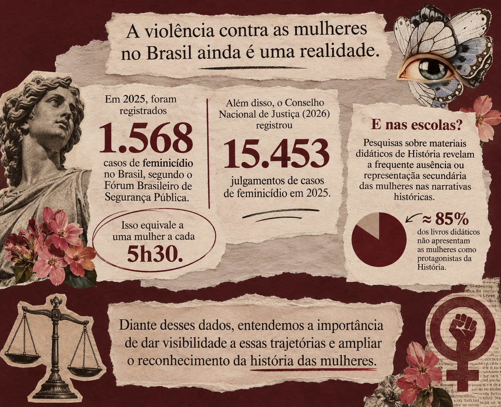
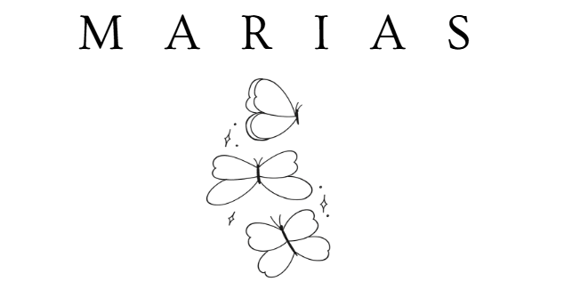
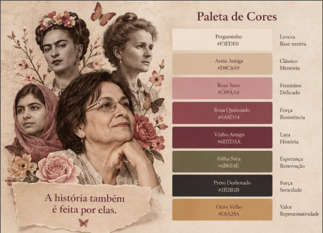

HISTÓRIA
Tudo começou com uma proposta do professor Symon: pesquisar mulheres que marcaram a história e compartilhar suas trajetórias. O que inicialmente parecia apenas uma atividade acadêmica despertou em nosso grupo um novo olhar sobre a importância de conhecer e valorizar histórias de mulheres que, com coragem e determinação, transformaram suas próprias vidas e inspiraram tantas outras.
Durante essa jornada, a história de Maria da Penha nos sensibilizou profundamente. Sua luta por justiça e pelo enfrentamento da violência contra a mulher nos fez compreender que ela representa muito mais do que um nome: representa a força de quem encontrou coragem para transformar a própria dor em esperança e mudança. Foi dessa inspiração que surgiu o nome Marias.
Mais do que uma homenagem a Maria da Penha, Marias simboliza todas as mulheres. Cada Maria carrega uma história, uma luta, um sonho e uma voz que merece ser ouvida. Este projeto nasce para reconhecer essas trajetórias, incentivar a conscientização e lembrar que, por trás de cada mulher, existe uma história que merece ser acolhida, respeitada e jamais esquecida.
DADOS
A violência contra a mulher permanece como um dos maiores desafios sociais do Brasil. De acordo com o levantamento mais recente do Fórum Brasileiro de Segurança Pública, 1.568 mulheres foram vítimas de feminicídio em 2025, o maior número registrado desde que esse crime passou a ser tipificado em lei, em 2015. Isso significa que, em média, uma mulher foi assassinada por razões de gênero a cada cinco horas no país. Além disso, foram registradas 3.870 tentativas de feminicídio, um aumento de 19% em relação ao ano anterior, evidenciando que a violência contra as mulheres continua crescendo.
Esses números refletem uma realidade que vai além da violência física. Muitas mulheres têm suas dores, denúncias e relatos constantemente invalidados, desacreditados ou minimizados, o que dificulta a busca por ajuda e favorece a continuidade dos ciclos de violência. Conscientizar a sociedade, fortalecer redes de apoio e dar visibilidade às histórias e às vozes femininas são passos fundamentais para construir um futuro mais seguro, justo e igualitário para todas.

PERSONA

MAPA DA EMPATIA
PESQUISA DE CAMPO
Questionário aplicado para coleta de dado.
Acessar formulárioGRÁFICOS
A pesquisa de campo realizada pelo projeto Marias revelou percepções importantes sobre a valorização da história das mulheres e a permanência da violência de gênero na sociedade.
Os resultados mostram que 71,4% dos participantes acreditam que as histórias das mulheres ainda não são devidamente valorizadas, enquanto 100% afirmaram já ter visto casos de violência contra a mulher na internet ou na televisão.
Além disso, 71,4% reconhecem a existência de atitudes que podem normalizar essa violência. Os dados também evidenciam a importância de ampliar a representatividade feminina na história, promover o reconhecimento de mulheres que marcaram a sociedade e fortalecer espaços de apoio e conscientização.
Dessa forma, a pesquisa reforça a necessidade de iniciativas como o Marias, que buscam dar visibilidade a essas histórias e contribuir para a construção de uma sociedade mais consciente.
Identidade Visual
PRIMEIRA IDENTIDADE VISUAL
A primeira identidade visual do Marias foi pensada para transmitir acolhimento, conforto e sensibilidade. Por meio de uma estética clean, com cores suaves e tons pastéis, buscamos criar um ambiente leve e respeitoso, onde as histórias das mulheres pudessem ser conhecidas, valorizadas e preservadas.

FONTES ESCOLHIDAS

LOGO MARIAS

Primeira versão da identidade visual do Marias.

Versão atual da identidade visual do Marias.
A logo do projeto “Marias” nasceu da ideia de representar, por meio de um único símbolo, a trajetória de mulheres que, mesmo diante de silenciamentos, apagamentos e desafios históricos, continuam transformando a sociedade. A borboleta foi escolhida como elemento central por carregar um significado que dialoga diretamente com a essência do projeto: a transformação.
Seu processo de metamorfose representa as mudanças que atravessam a história das mulheres, suas lutas por reconhecimento, autonomia e liberdade, além da capacidade de reconstruir caminhos e ressignificar suas próprias histórias.
Suas asas representam a liberdade de ser, existir e ocupar espaços, enquanto sua delicadeza simboliza a sensibilidade, sem deixar de expressar a força que existe em cada mulher. Mais do que representar a feminilidade, a borboleta traduz a pluralidade de trajetórias, vozes e identidades femininas.
O nome “Marias”, integrado ao símbolo, representa essa coletividade: não uma única mulher, mas todas aquelas que, em diferentes épocas e contextos, contribuíram e continuam contribuindo para transformar o mundo. São histórias individuais que, quando reunidas, formam uma memória coletiva que merece ser reconhecida e preservada.
Ao longo do desenvolvimento do projeto, a identidade visual passou por transformações que acompanharam o amadurecimento da própria proposta. A evolução da logo não representou apenas uma mudança estética, mas uma busca por traduzir visualmente um propósito cada vez mais profundo.
A composição passou a incorporar elementos que remetem à memória, à história e à resistência feminina, aproximando o símbolo da proposta de resgatar histórias que foram esquecidas ou silenciadas.
Dessa forma, a borboleta tornou-se mais do que a representação visual do Marias: tornou-se a expressão de sua mensagem. Assim como cada transformação deixa marcas em sua trajetória, cada mulher carrega uma história que merece ser lembrada, valorizada e nunca apagada.
LOGO ANIMADA
MUDANÇA NA IDENTIDADE VISUAL
A identidade visual passou por mudanças ao longo do desenvolvimento do projeto. Essas transformações buscaram construir uma representação mais coerente com a proposta do Marias, valorizando sua essência, sua história e a mensagem que deseja transmitir.

IDENTIDADE COMO HISTÓRIA NO MARIAS
A identidade visual atual do Marias nasceu da compreensão de que contar a história das mulheres também é uma forma de resistência. Inspirada em arquivos, documentos antigos e registros históricos, ela representa as marcas do tempo e as vozes que, por muito tempo, foram silenciadas ou deixadas à margem da história. Cada elemento carrega o significado de preservar memórias, reconhecer lutas e devolver às mulheres o espaço de protagonismo que sempre lhes pertenceu. Afinal, lembrar essas histórias é também impedir que sejam esquecidas novamente.

Banco de Dados
LEVANTAMENTO DE REQUISITOS
O sistema Marias terá como principais funcionalidades o cadastro, login e gerenciamento de contas de usuários, permitindo diferentes níveis de acesso para visitantes, usuários cadastrados e administradores. Os usuários poderão navegar por uma barra de menu, visualizar histórias de mulheres importantes, acessar suas biografias completas e pesquisar personalidades específicas. A plataforma também contará com uma borboleta interativa que direcionará rapidamente à área de denúncias, onde será possível enviar relatos ou pedidos de ajuda por meio de um formulário.
Entre os recursos educativos, estarão disponíveis um quiz interativo, que relacionará os gostos, interesses e características dos participantes às mulheres importantes da história, apresentando um resultado acompanhado de sua trajetória e conquistas. Também haverá uma seção dedicada a filmes e livros, com recomendações, sinopses e informações sobre as mulheres retratadas. Para a administração, o sistema permitirá cadastrar, editar e excluir histórias, além de visualizar as denúncias recebidas.
Em relação aos requisitos técnicos, a aplicação será desenvolvida utilizando Django, com linguagem Python, e banco de dados SQLite para a versão inicial (MVP). A plataforma deverá apresentar interface responsiva, adaptando-se a celulares, tablets e computadores, além de garantir navegação simples e acessível, bom desempenho no carregamento das páginas, armazenamento seguro de senhas e proteção dos dados dos usuários.
Documento Levantamento de RequisitosDIAGRAMA DE CASOS DE USO
O diagrama de casos de uso do projeto Marias representa as principais funcionalidades do sistema e a interação entre seus diferentes usuários. Nele, são apresentados três atores: visitante, usuário cadastrado e administrador. O visitante pode realizar seu cadastro e login, enquanto o usuário cadastrado tem acesso à visualização, pesquisa e consulta de histórias, navegação pelo menu e página de denúncias, podendo também enviar denúncias. Já o administrador é responsável pelo gerenciamento das histórias, podendo cadastrá-las, editá-las e excluí-las, além de visualizar as denúncias recebidas. Dessa forma, o diagrama permite compreender a organização e o funcionamento do sistema, demonstrando como cada perfil contribui para os objetivos do Marias.

MODELAGEM DO BANCO DE DADOS
Estrutura do Banco de Dados
O banco de dados do Marias é estruturado em tabelas relacionais que organizam as informações da plataforma. Entre as principais estão: Usuários, responsável pelos dados de cadastro e acesso; Administrador, destinado ao gerenciamento do sistema; Histórias das Mulheres, que reúne biografias e registros históricos; Livros e Filmes, que armazenam recomendações de conteúdos educativos; Denúncias, que registra os relatos enviados pela plataforma; Perguntas, que organiza questões e alternativas; e Quiz e Metadados, responsáveis pela estruturação das atividades interativas e seus resultados.
A integração dessas tabelas acontece por meio de chaves primárias e estrangeiras, estabelecendo relacionamentos entre os dados. O modelo utiliza relações como um para muitos (1:N), em que um registro pode estar associado a vários outros; um para um (1:1), quando existe uma associação exclusiva entre dois registros; e muitos para muitos (N:N), quando diferentes registros podem se relacionar entre si, geralmente por meio de uma tabela intermediária. Essa estrutura garante a organização, a consistência e a integração das informações armazenadas.

Além da Tecnologia
O IMPACTO DO MARIAS NA SOCIEDADE
O Marias busca gerar impacto social por meio da informação, da educação e da valorização das mulheres. A partir de nossas pesquisas, identificamos que a violência de gênero e o feminicídio continuam sendo problemas graves no Brasil, evidenciando a necessidade de ampliar o acesso à informação e fortalecer a conscientização social. Nesse contexto, a plataforma pretende contribuir para a transformação dessa realidade, dando visibilidade a histórias femininas que muitas vezes foram apagadas, divulgando informações sobre prevenção e enfrentamento da violência e facilitando o acesso a canais de denúncia e apoio. Mais do que reunir informações, o Marias busca incentivar o conhecimento, despertar reflexões e fortalecer uma cultura de respeito, reconhecimento e proteção às mulheres.
MEMÓRIAS QUE NÃO PODEM SER ESQUECIDAS
A história das mulheres é construída por vozes, conquistas, lutas e trajetórias que merecem ser lembradas. Ao longo do tempo, muitas tiveram suas contribuições invisibilizadas, suas histórias silenciadas e seus nomes deixados à margem dos registros históricos. Preservar essas memórias é reconhecer que cada mulher que transformou sua realidade também contribuiu para transformar o mundo. O Marias nasce desse compromisso: resgatar histórias, valorizar trajetórias e garantir que essas mulheres não sejam lembradas apenas pelo que enfrentaram, mas também por tudo o que foram, construíram e representaram. Afinal, nenhuma história deveria desaparecer simplesmente porque o mundo deixou de contá-la.
UM PROJETO COM PROPÓSITO
Mais do que desenvolver uma plataforma web, buscamos construir um espaço que una tecnologia, educação e responsabilidade social. O Marias representa nosso compromisso com a conscientização, a valorização feminina e o enfrentamento da violência contra a mulher.
Cada história merece ser lembrada. Cada mulher merece ser ouvida. E nenhuma forma de violência deve ser silenciada.